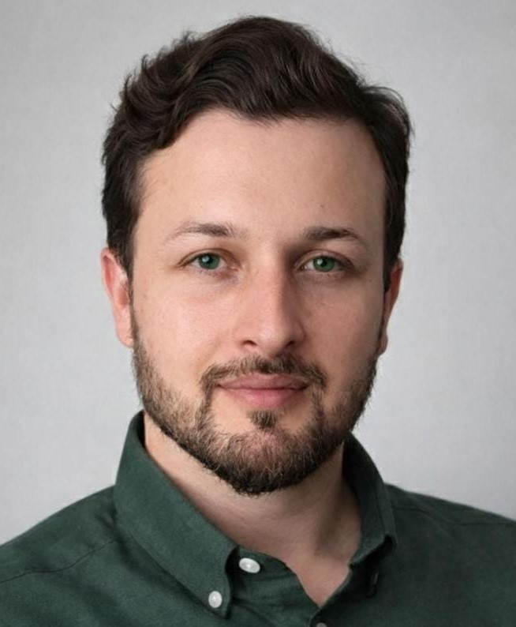

Digital twins
Data-based models for diabetes and metabolic health.
I work on generative AI and data-driven digital twins, with applications in diabetes and metabolic health.

My research focuses on data-driven models of physiological signals and their applications in healthcare.
Data-based models for diabetes and metabolic health.
Conditional generation of physiological time series, including approaches to improve plausibility.
Hypoglycemia detection and prediction, including HRV–CGM integration.
Synthetic data generation and augmentation for clinical AI research.
Research in generative models and digital twins.
I am a researcher at MICELAB, University of Girona, where I lead research activities on the Personal Digital Twin initiative. My work focuses on deep generative models for understanding and simulating the human metabolic system, with applications in diabetes healthcare and personalized medicine.
Lectures, workshops and conference presentations.
For research collaborations, talks, or other enquiries, please feel free to get in touch.